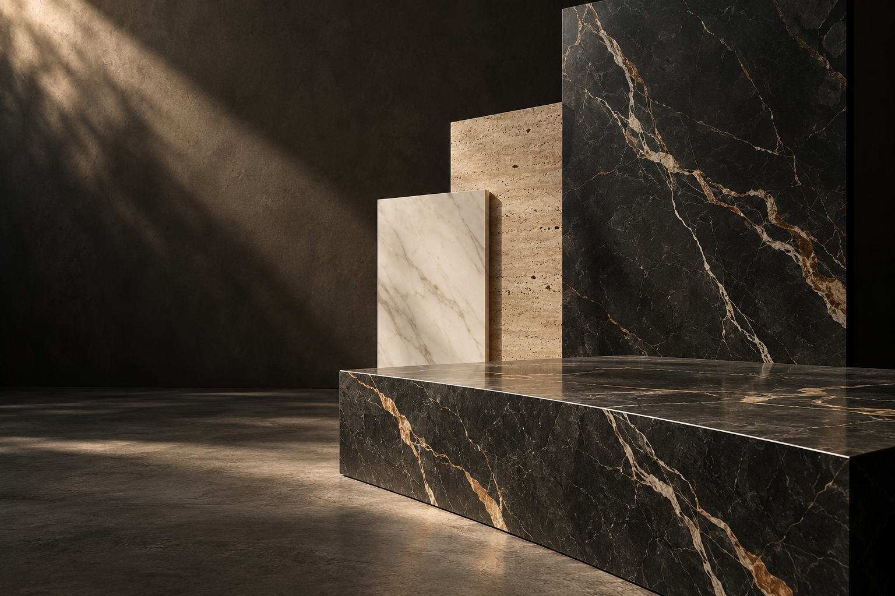

Прямой рез
Раскрой под ваш размер для пола, стен, фартука и плинтуса.
от 400 ₽ / м↗

РЕЗКА КЕРАМОГРАНИТА · МОСКВА
Из большой плиты — в вашу идею.
Раскрой по размерам, аккуратные углы
и вырезы для продуманного интерьера.
01 / ВОЗМОЖНОСТИ
От прямого реза до выразительных деталей. Выберите нужную обработку — предварительную стоимость покажет калькулятор.
Раскрой под ваш размер для пола, стен, фартука и плинтуса.
Обработка кромки для стыковки внешних углов без накладного профиля.
Под трубы, сантехнику и электрику. Сложные контуры — по чертежу.
Минимальная стоимость обработки — 2 000 ₽. Материал, доставка и монтаж рассчитываются отдельно.
02 / ВАШ ПРОЕКТ В ЦИФРАХ
Укажите размер готовой прямоугольной детали и выберите стороны, которые нужно обработать.
Стоимость резки = сумма длин выбранных сторон × количество деталей × тариф. Отверстия считаются на каждую деталь. Минимум 2 000 ₽ применяется один раз ко всему заказу.
При максимальной стороне до 1 500 мм: прямой рез — 400 ₽/м, запил 45° — 650 ₽/м. Тариф заусовки не складывается с тарифом прямого реза на той же стороне.
Базовый расчёт используется для толщины 6–12 мм. Другие толщины, формат свыше 1 500 мм, нестандартные углы и отверстия требуют индивидуального расчёта. Это границы онлайн-оценки, а не ограничение возможностей производства. Материал, доставка, склейка, полировка и монтаж не включены.
Размеры в калькуляторе относятся к готовой детали. Проверка исходной плиты, припусков и раскладки выполняется по чертежу перед подтверждением заказа.
03 / ФОРМА И ФАКТУРА
Мраморная графика, глубина камня, тепло травертина. Три идеи применения керамогранита.
Запил 45° и отверстия под сантехнику.
Раскрой проступей и подступенков по размерам.
Подгонка формата и вырезы под розетки.
Изображения созданы для демонстрации возможных решений. Это не фотографии выполненных заказов. Изготовление и сборка изделий обсуждаются отдельно.
УСЛУГИ И СТОИМОСТЬ
Для предварительной оценки нужны размеры готовых деталей, количество, толщина материала и вид обработки. Стоимость резки рассчитывается по длине выбранных сторон, а отверстия — поштучно.
| Обработка | Максимальная сторона детали до 1 200 мм | Свыше 1 200 до 1 500 мм |
|---|---|---|
| Прямой рез | 400 ₽ / м | 400 ₽ / м |
| Запил под 45° | 650 ₽ / м | 650 ₽ / м |
| Отверстие Ø10 / 50 / 100 / 120 мм | 100 / 500 / 1 000 / 1 200 ₽ за отверстие | |
Минимальная стоимость обработки всего заказа — 2 000 ₽. Это ориентиры для предварительного расчёта, окончательная цена согласуется после проверки материала и задания. Материал, доставка, склейка, полировка и монтаж не включены. Другую толщину, формат свыше 1 500 мм и нестандартные вырезы рассчитываем по чертежу.
Прямой раскрой нужен для подгонки плит на стены и пол, кухонного фартука и плинтусов. На эскизе укажите размеры готовых деталей в миллиметрах и отметьте стороны, требующие обработки. Направление рисунка и расположение деталей на исходной плите согласуются отдельно.
Калькулятор использует наибольшую сторону готовой детали для проверки возможности предварительного онлайн-расчёта. Поэтому при согласовании заказа также сообщите фактические размеры исходных плит и их толщину.
Запил, или заусовка, — обработка кромки для соединения двух деталей на внешнем углу. Такой стык используют при облицовке коробов, ниш и других элементов интерьера. Для расчёта отметьте каждую кромку, которую нужно обработать.
Например, стык длиной 1 метр из двух деталей — это 2 метра запила. При базовом тарифе обработка составит 1 300 ₽, но для отдельного заказа действует минимум 2 000 ₽. Склейка и монтаж в эту сумму не входят.
Для отверстий под трубы и коммуникации нужны диаметр, количество и координаты центра относительно краёв детали. В калькуляторе указывается количество отверстий на одну деталь: при увеличении числа деталей их стоимость увеличится соответственно.
Для розеток и сложных контуров подготовьте чертёж или шаблон. Возможность обработки и цену нестандартного выреза нужно согласовать до передачи материала.
Подготовьте эскиз, фото лицевой стороны и маркировки плитки. Укажите размеры, количество деталей, нужный угол, отверстия и направление рисунка. Расчёт из калькулятора можно скачать или скопировать.
Позвоните по номеру +7 985 986-25-64, чтобы согласовать задание, стоимость, сроки и место передачи материала. Небольшие и поштучные заказы обсуждаются с учётом минимальной стоимости обработки.
04 / ОТ РАЗМЕРА К ДЕТАЛИ
Рассчитайте обработку онлайн. Подготовьте фото материала и эскиз с размерами в миллиметрах.
Позвоните, чтобы уточнить стоимость, срок, передачу материала и способ отправки чертежа.
Условия изготовления и получения деталей фиксируются при подтверждении заказа.
05 / ПОЛЕЗНО ЗНАТЬ
Можно обсудить и небольшой объём. В предварительном расчёте действует минимальная стоимость обработки 2 000 ₽ на весь заказ.
Это обработка кромки под углом для соединения двух плит на внешнем углу. В калькуляторе оплачивается каждая обрабатываемая сторона: для стыка двух деталей нужно учесть обе кромки.
Нет. Это предварительная оценка обработки. Точная стоимость зависит от материала, его состояния и задания. Материал, доставка, склейка, полировка и монтаж в расчёт не включены.
Укажите размеры готовых деталей в миллиметрах, их количество, лицевую сторону, направление рисунка, стороны запила и расположение отверстий. Также понадобятся фактический размер и толщина исходных плит.
Место передачи материала и срок готовности уточняются по телефону до поездки. Адрес цеха и график приёма будут опубликованы после подтверждения.
ОБСУДИМ ВАШУ ИДЕЮ
Москва
Приём и передача материала — по согласованию.